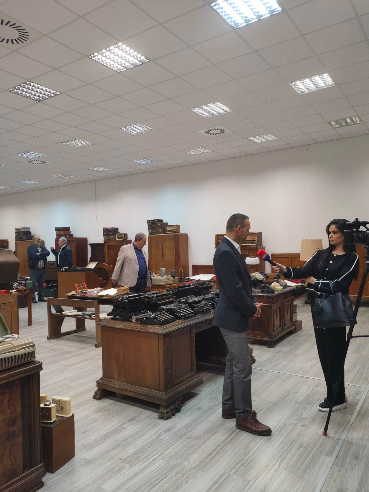
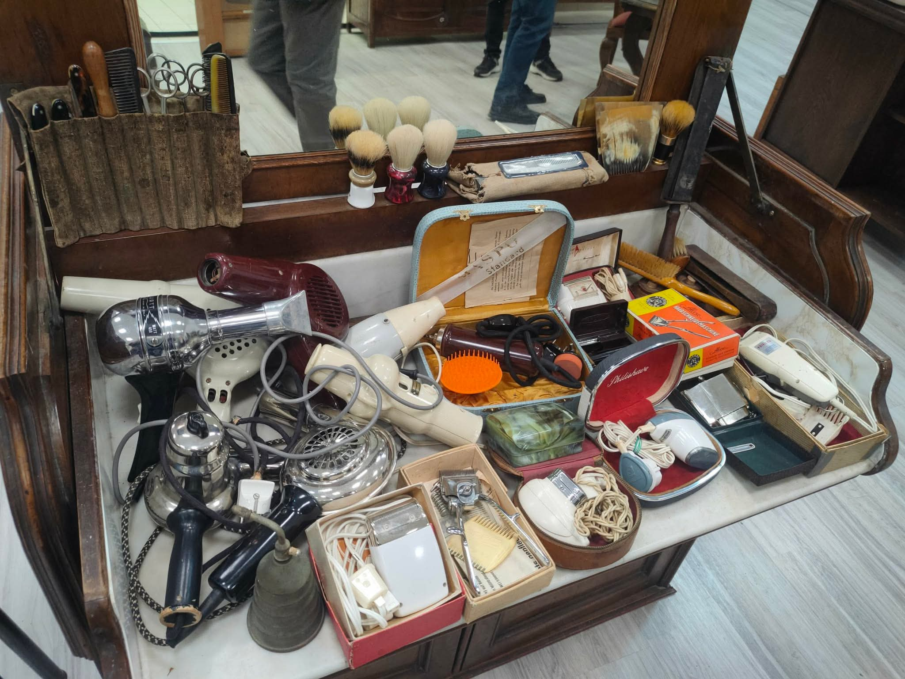
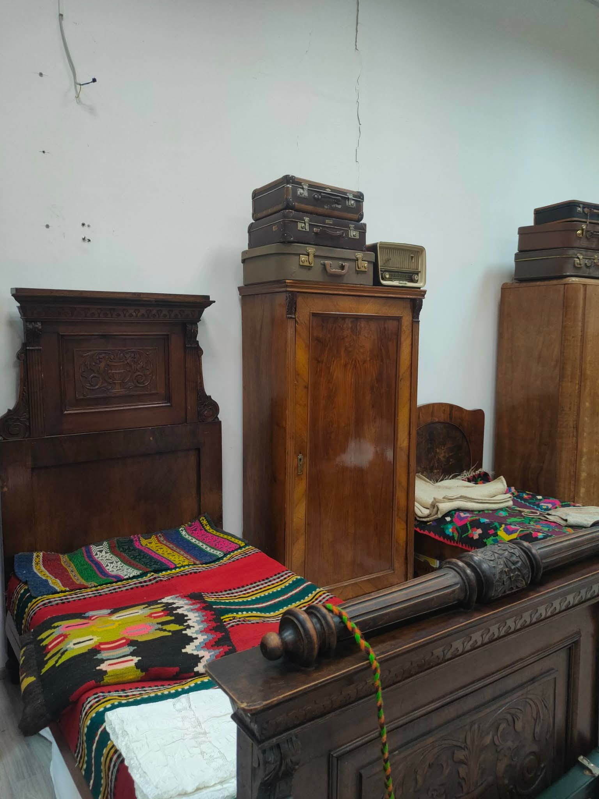
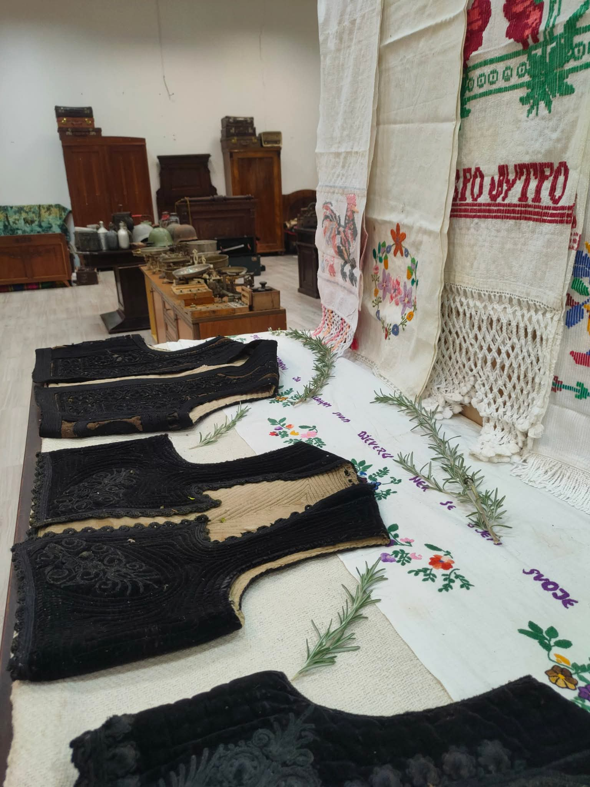
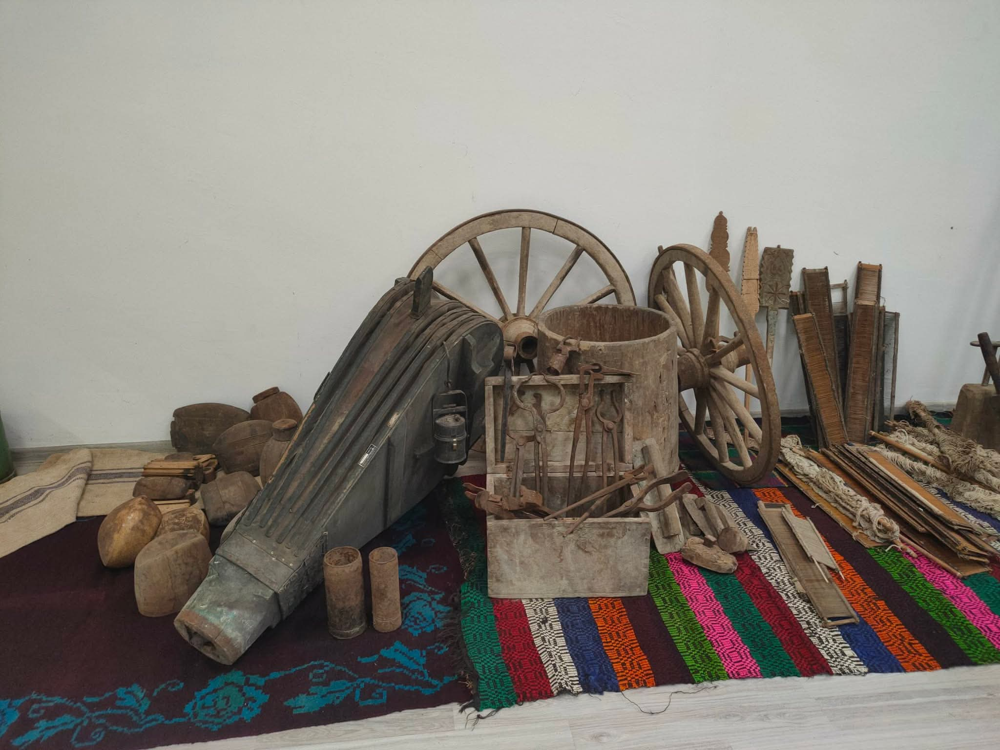

Arhiv 2025
Fotografije su složene po temama kako bi se jasnije videlo šta je izložba obuhvatala i kako izgleda razvoj postavke kroz različite cjeline.
Kuhinjski kabineti i pokućstvo
Ovaj deo prikazuje kućni nameštaj, stare ormare i predmete koji nose atmosferu starog doma.

Domaći inventar i posuđe

Nameštaj i porodična fotografija

Predmet iz svakodnevnog rada
Vez, peškiri i ručni radovi
Tekstilni dio je odvojen kako bi se jasno videli vezovi, natpisi i narodna ornamentika.

Tekstil kao deo svakodnevice

Ručno rađeni vez

Raspored tekstilnih celina
Telefoni, gramofoni i radio-aparati
Tehnički predmeti su raspoređeni zasebno da se čita kako se svakodnevni život menjao kroz decenije.

Telefoni kroz decenije

Radio i gramofoni

Razvoj kućne komunikacije
Knjige, alati i sitni predmeti
Završni blok arhiva okuplja knjige, plakete, ručne alate i predmete koji daju širinu čitavoj izložbenoj priči.

Knjige i memorabilije

Predmeti iz svakodnevnog rada

Predmeti lične upotrebe
